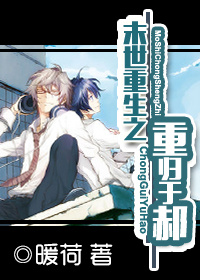

Antes de renacer, He Zizhong tuvo mala suerte. Este perro leal era leal al objetivo equivocado. En los difíciles últimos tiempos, fue traicionado por sus familiares, engañado por su amante para mostrarle su espacio y tristemente perseguido por el enemigo.
No fue hasta antes de morir que se enteró de que Fang Hao, quien lo acompañó durante todo el camino, resultó ser el hermano menor que se le confesó en la escuela secundaria. Es una pena que él también haya muerto en sus brazos.
En la vida pasada de He Zizhong, Fang Hao sintió que tenía suerte, después de seis o siete años, en el apocalipsis desesperado, encontró nuevamente al mayor que fue su primer amor y pudo acompañarlo durante medio año.
Más importante aún, al final de la vida, aún puedes morir en los brazos de alguien que te agrada. ¿Hay algo más feliz en el mundo?
Después del renacimiento, He Zizhong reutilizó los hechos para demostrar que, por supuesto, hay algo más feliz en este mundo que la muerte en el mismo punto.
Con un espacio y una amante a quien ha prometido proteger en esta vida, golpeando zombis, mejorando y creando una vida mejor juntos, este es el objetivo de vida de He Zizhong después del renacimiento. ¿Qué haces cuando te encuentras con un amante que ha engañado tus sentimientos en tu vida anterior, un primo que egoístamente quiere engañar a tu propio espacio o emite una orden de asesinato para perseguir a tu rival amoroso?
Como no pueden moverse, ¡pisalos en el barro con un pie!